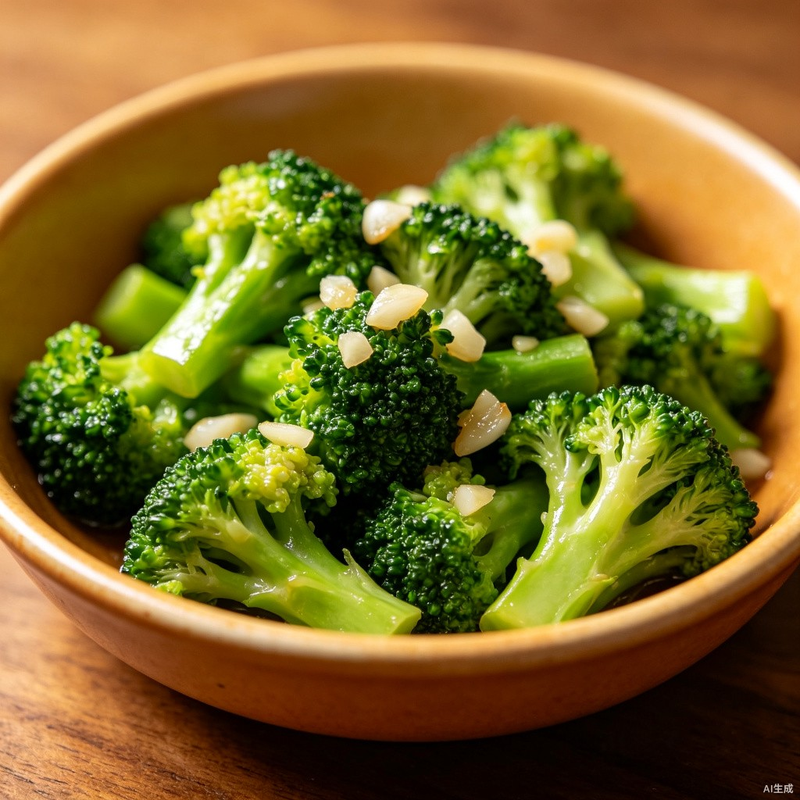

我的收藏
共 12 个食谱
青椒肉丝
15分钟 · 简单 · 4.8
收藏于 3天前
山药药膳鸡汤
90分钟 · 中等 · 4.9
收藏于 1周前

蒜蓉西兰花
12分钟 · 简单 · 4.6
收藏于 2周前
番茄蛋汤
10分钟 · 简单 · 4.7
收藏于 1月前
左滑可取消收藏
15分钟 · 简单 · 4.8
收藏于 3天前
90分钟 · 中等 · 4.9
收藏于 1周前

12分钟 · 简单 · 4.6
收藏于 2周前
10分钟 · 简单 · 4.7
收藏于 1月前